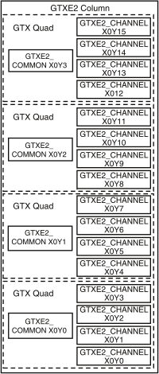
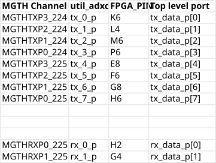
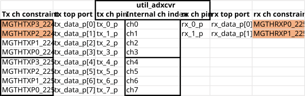
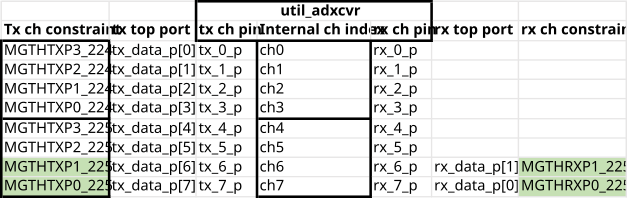
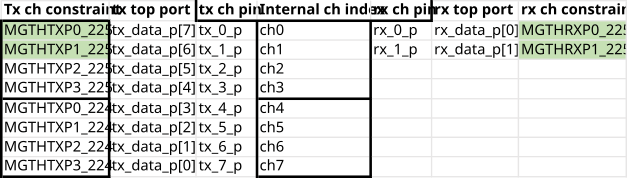

UTIL_ADXCVR core for AMD Xilinx devices
The util_adxcvr IP core instantiates a Gigabit Transceiver (GT) and sets up the required configuration. Basically, it is a simple wrapper file for a GT* Column, exposing just the necessary ports and attributes.
Note
To understand the below wiki page is important to have a basic understanding about High Speed Serial I/O interfaces and Gigabit Serial Transceivers. To find more information about these technologies, please visit the AMD Xilinx’s solution center.
Currently this IP supports three different GT types:
GTXE2 (7 Series devices)
GTHE3 (Ultrascale and Ultrascale+)
GTHE4 (Ultrascale and Ultrascale+)
GTYE4 (Ultrascale and Ultrascale+)
Features
Supports GTX2, GTH3 and GTH4
Exposes all the necessary attributes for QPLL/CPLL configuration
Supports shared transceiver mode
Supports dynamic reconfiguration
RX Eye Scan
Block Diagram
The following diagram shows a GTXE2 Column, which contains four GT Quads. Each quad contains a GTEX2_COMMON and four GTXE2_CHANNEL primitives.

Configuration Parameters
Name |
Description |
Default Value |
Choices/Range |
|---|---|---|---|
XCVR_TYPE |
Define the current GT type: GTXE2(0), GTHE3(1), GTHE4(2) |
0 |
Unknown (0), GTPE2_NOT_SUPPORTED (1), GTXE2 (2), GTHE2_NOT_SUPPORTED (3), GTZE2_NOT_SUPPORTED (4), GTHE3 (5), GTYE3_NOT_SUPPORTED (6), GTRE4_NOT_SUPPORTED (7), GTHE4 (8), GTYE4 (9), GTME4_NOT_SUPPORTED (10) |
RX_LANE_RATE |
Rx Lane Rate (Gbps). |
12.5 |
|
TX_LANE_RATE |
Tx Lane Rate (Gbps). |
12.5 |
|
LINK_MODE |
Link Layer mode. |
1 |
64B66B (2), 8B10B (1) |
DATA_PATH_WIDTH |
Data Path Width. |
4 |
|
QPLL_REFCLK_DIV |
QPLL reference clock divider M, see User Guide for more info |
1 |
|
QPLL_FBDIV_RATIO |
QPLL reference clock divider N ratio, see User Guide for more info |
1 |
|
POR_CFG |
Por Cfg. |
'h0006 |
|
PPF0_CFG |
Ppf0 Cfg. |
'h0600 |
|
PPF1_CFG |
Ppf1 Cfg. |
'h0600 |
|
QPLL_CFG |
Configuration settings for QPLL, see User Guide for more info |
'b000011010000000000110000001 |
|
QPLL_FBDIV |
QPLL reference clock divider N, see User Guide for more info |
'b0000110000 |
|
QPLL_CFG0 |
Qpll Cfg0. |
'h331C |
|
QPLL_CFG1 |
Qpll Cfg1. |
'hD038 |
|
QPLL_CFG1_G3 |
Qpll Cfg1 G3. |
'hD038 |
|
QPLL_CFG2 |
Qpll Cfg2. |
'h0FC0 |
|
QPLL_CFG2_G3 |
Qpll Cfg2 G3. |
'h0FC0 |
|
QPLL_CFG3 |
Qpll Cfg3. |
'h0120 |
|
QPLL_CFG4 |
Qpll Cfg4. |
'h0003 |
|
QPLL_CP_G3 |
Qpll Cp G3. |
'b0000011111 |
|
QPLL_LPF |
Qpll Lpf. |
'b0100110111 |
|
QPLL_CP |
Qpll Cp. |
'b0001111111 |
|
QPLLCLKOUT_RATE |
Qpllclkout Rate. |
HALF |
|
CPLL_FBDIV |
CPLL feedback divider N2 settings, see User Guide for more info |
2 |
|
CPLL_FBDIV_4_5 |
CPLL reference clock divider N1 settings, see User Guide for more info |
5 |
|
CPLL_CFG0 |
Cpll Cfg0. |
'h01FA |
|
CPLL_CFG1 |
Cpll Cfg1. |
'h0023 |
|
CPLL_CFG2 |
Cpll Cfg2. |
'h0002 |
|
CPLL_CFG3 |
Cpll Cfg3. |
'h0000 |
|
CH_HSPMUX |
Ch Hspmux. |
'h2424 |
|
PREIQ_FREQ_BST |
Preiq Freq Bst. |
0 |
|
RXPI_CFG0 |
Rxpi Cfg0. |
'h0002 |
|
RXPI_CFG1 |
Rxpi Cfg1. |
'h0015 |
|
RTX_BUF_CML_CTRL |
Rtx Buf Cml Ctrl. |
'b011 |
|
TX_NUM_OF_LANES |
Number of transmit lanes. |
8 |
|
TX_OUT_DIV |
CPLL/QPLL output clock divider D for the TX datapath, see User Guide for more info |
1 |
|
TX_CLK25_DIV |
Divider for internal 25 MHz clock for the TX datapath, see User Guide for more info |
20 |
|
TX_LANE_INVERT |
Per lane polarity inversion. Set the n-th bit to invert the polarity of the n-th transmit lane. |
0 |
|
TX_PI_BIASSET |
Tx Pi Biasset. |
1 |
|
TXPI_CFG |
Txpi Cfg. |
'h0054 |
|
A_TXDIFFCTRL |
A Txdiffctrl. |
'b10110 |
|
RX_NUM_OF_LANES |
Number of transmit lanes |
8 |
|
RX_OUT_DIV |
CPLL/QPLL output clock divider D for the RX datapath, see User Guide for more info |
1 |
|
RX_CLK25_DIV |
Divider for internal 25 MHz clock for the RX datapath, see User Guide for more info |
20 |
|
RX_DFE_LPM_CFG |
Configure the GT use modes, LPM or DFE, see User Guide for more info |
'h0104 |
|
RX_PMA_CFG |
Search for PMA_RSV in User Guide for more info |
'h001E7080 |
|
RX_CDR_CFG |
Configure the RX clock data recovery circuit for GTXE2, see User Guide for more info |
'h0B000023FF10400020 |
|
RXCDR_CFG0 |
Rxcdr Cfg0. |
'h0002 |
|
RXCDR_CFG2 |
Rxcdr Cfg2. |
'h0269 |
|
RXCDR_CFG2_GEN2 |
Rxcdr Cfg2 Gen2. |
'b1001100101 |
|
RXCDR_CFG2_GEN4 |
Rxcdr Cfg2 Gen4. |
'h00B4 |
|
RXCDR_CFG3 |
Rxcdr Cfg3. |
'h0012 |
|
RXCDR_CFG3_GEN2 |
Rxcdr Cfg3 Gen2. |
'b011010 |
|
RXCDR_CFG3_GEN3 |
Rxcdr Cfg3 Gen3. |
'h0012 |
|
RXCDR_CFG3_GEN4 |
Rxcdr Cfg3 Gen4. |
'h0024 |
|
RXDFE_KH_CFG2 |
Rxdfe Kh Cfg2. |
'h0200 |
|
RXDFE_KH_CFG3 |
Rxdfe Kh Cfg3. |
'h4101 |
|
RX_WIDEMODE_CDR |
Rx Widemode Cdr. |
'b00 |
|
RX_XMODE_SEL |
Rx Xmode Sel. |
'b1 |
|
TXDRV_FREQBAND |
Txdrv Freqband. |
0 |
|
TXFE_CFG0 |
Txfe Cfg0. |
'h03C2 |
|
TXFE_CFG1 |
Txfe Cfg1. |
'h6C00 |
|
TXFE_CFG2 |
Txfe Cfg2. |
'h6C00 |
|
TXFE_CFG3 |
Txfe Cfg3. |
'h6C00 |
|
TXPI_CFG0 |
Txpi Cfg0. |
'h0300 |
|
TXPI_CFG1 |
Txpi Cfg1. |
'h1000 |
|
TXSWBST_EN |
Txswbst En. |
0 |
|
RX_LANE_INVERT |
Per lane polarity inversion. Set the n-th bit to invert the polarity of the n-th receive lane. |
0 |
Interface
Microprocessor clock and reset
Pin |
Type |
Description |
|---|---|---|
|
|
System clock, running on 100 MHz |
|
|
System reset, the same as AXI memory map subordinate interface reset |
PLL reference clock
Pin |
Type |
Description |
|---|---|---|
|
|
Reference clock for the QPLL |
|
|
Reference clock for the CPLL |
RX interface
Pin |
Type |
Description |
|---|---|---|
|
|
Positive differential serial data input |
|
|
Negative differential serial data input |
|
|
Core logic clock output. Frequency = serial line rate/40 |
|
|
Core logic clock loop-back input |
|
|
RX Char is K to the JESD204B IP |
|
|
RX disparity error to the JESD204B IP |
|
|
RX Not In Table to the JESD204B IP |
|
|
RX data to the JESD204B IP |
|
|
RX enable comma alignment from the JESD204B IP |
TX interface
Pin |
Type |
Description |
|---|---|---|
|
|
Positive differential serial output |
|
|
Negative differential serial output |
|
|
Core logic clock output. Frequency = serial line rate/40 |
|
|
Core logic clock loop-back input |
|
|
TX Char is K from the JESD204B IP |
|
|
TX data from the JESD204B IP |
Common DRP Interface
Pin |
Type |
Description |
|---|---|---|
|
|
The common DRP interface, must be connected to the equivalent DRP ports of AXI_ADXCVR. This is a QUAD interface, shared by four transceiver lanes. This interface is available only if parameter QPLL_ENABLE is set to 0x1. |
Channel DRP Interface
Pin |
Type |
Description |
|---|---|---|
|
|
The RX channel DRP interface, must be connected to the equivalent DRP ports of AXI_ADXCVR. This is a channel interface, one per each RX transceiver lane. |
|
|
The TX channel DRP interface, must be connected to the equivalent DRP ports of AXI_ADXCVR. This is a channel interface, one per each TX transceiver lane. |
Eye Scan DRP Interface
Pin |
Type |
Description |
|---|---|---|
|
|
The Eye-Scan DRP interface, must be connected to the equivalent DRP ports of UTIL_ADXCVR. This is a channel interface, one per each transceiver lane. This interface is available only if parameter TX_OR_RX_N is set to 0x0. |
Design Guidelines
Note
Please refer to Xilinx FPGAs Transceivers Wizard to generate the optimal parameters needed to configure the transceivers for your project.
Physical constraints considerations
The util_adxcvr allocates resources/quads (channels and common) sequentially. Meaning, if you have 8 lanes it will insert two quads, 4 channels and a common block for each quad.
Channels within a quad are tightly coupled to the common block, the placement of the channel resources can be permuted within a quad and is affected by the constraint file with the restriction that rx_<N>_p/n connect to tx_<N>_p/n must connect to the same channel.
Supposing we have the following pin constraints and connections to the util_adxcvr:

So in this case we end up with a conflict during implementation:

We have to ensure that in implementation the mapping is correct either by rearranging the Rx connections

or by rearranging the Tx connections of the util_adxcvr:

In such cases, when rearrangement is required due placement constraints, complementary reordering is required either in the converter device (lane crossbars) or inside the FPGA between the physical and link layer, to connect the logical lanes with the same index on both end of the link.
Software Guidelines
The software can configure this core through the AXI_ADXCVR IP core.